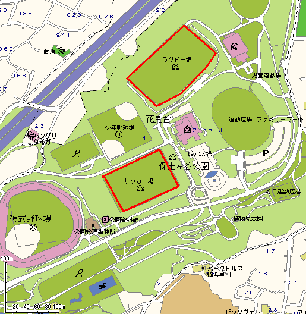

Hodogaya Koen Rugby ground map
Parking:
Parking available - large car park.
Location:
About 10 mins by
bus
from Hodogaya station on the JR Yokosuka Line or from Hoshikawa on the Sotetsu line.
DRIVING
MAP (YAHOO)

close